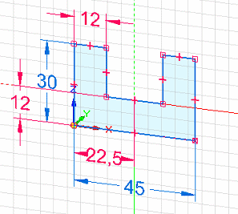
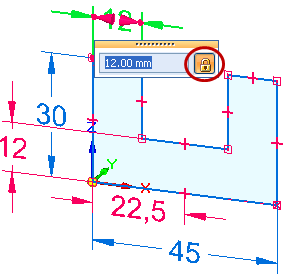
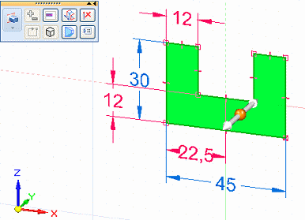
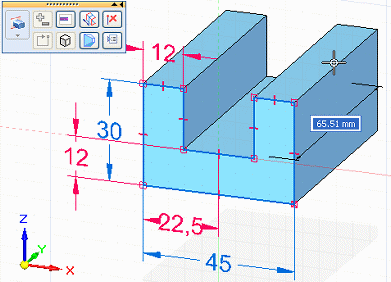
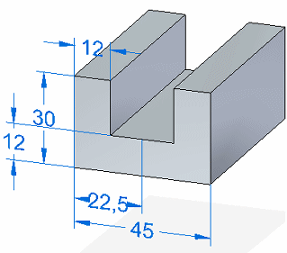

Create a dimensioned part from a sketch
When sketch dimensions migrate to model edges, they become 3D PMI dimensions, which can be used to modify the synchronous model. Unless they are formula-driven, all locked dimensions unlock, so you can set individual 3D PMI dimensions to be locked or unlocked on the solid part.
-
In a synchronous part document, draw a sketch of the part.
-
Add dimensions to the sketch.
Example:This sketch uses both locked dimensions (red) and unlocked dimensions (blue) in its construction.

Tip:To change a dimension from locked to unlocked, click the lock symbol on the dimension value edit handle, which is displayed when you click to place the dimension.

-
Choose the Select command
 , and then click a sketch region.
, and then click a sketch region.The extrude handle is displayed on the sketch.
-
Click either of the arrows on the extrude handle.
Example:
-
Specify the extent of the solid by doing either of the following:
-
Move the cursor until the extruded shape is the approximate size you want, and then click.
-
Define the extent precisely by typing a value in the dynamic input box near your cursor.
Example:
-
-
Complete the feature by clicking in free space.
All dimensions in the sketch migrated to the part and are now 3D PMI dimensions.
Example:
-
You can click the dimension text in a dimension to change the size of the model face or edge.
-
If you want to keep a PMI dimension value from being changed indirectly, you can lock it.
-
Another reason to lock a PMI dimension is if you want to use it in the Variable Table.
-
To learn how you can use PMI dimensions to change the model, see the Help topic, Edit the model using PMI dimensions.